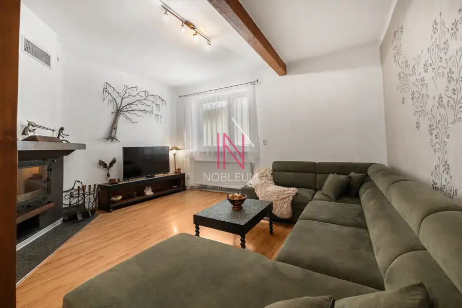
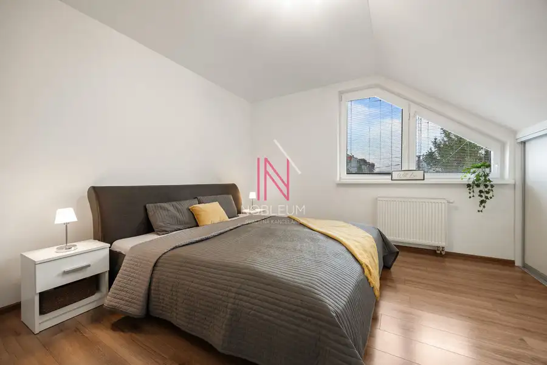
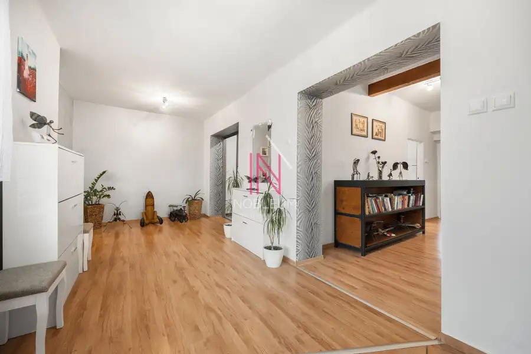
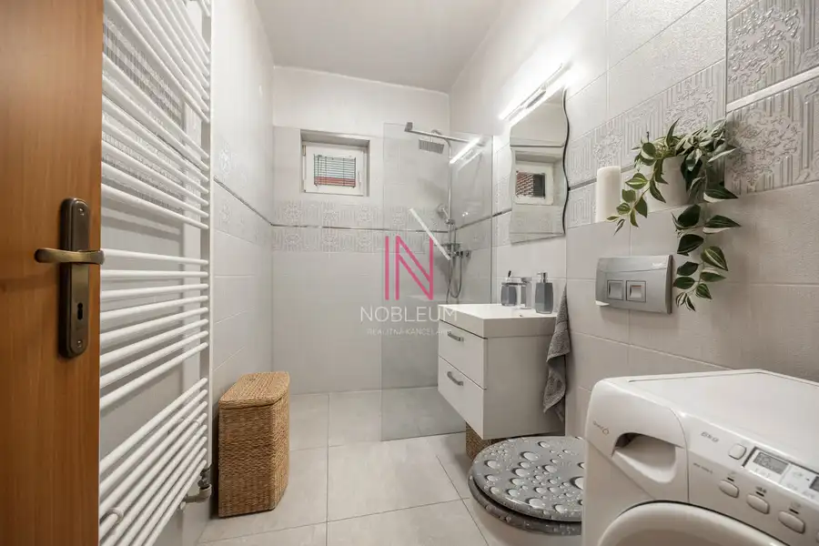
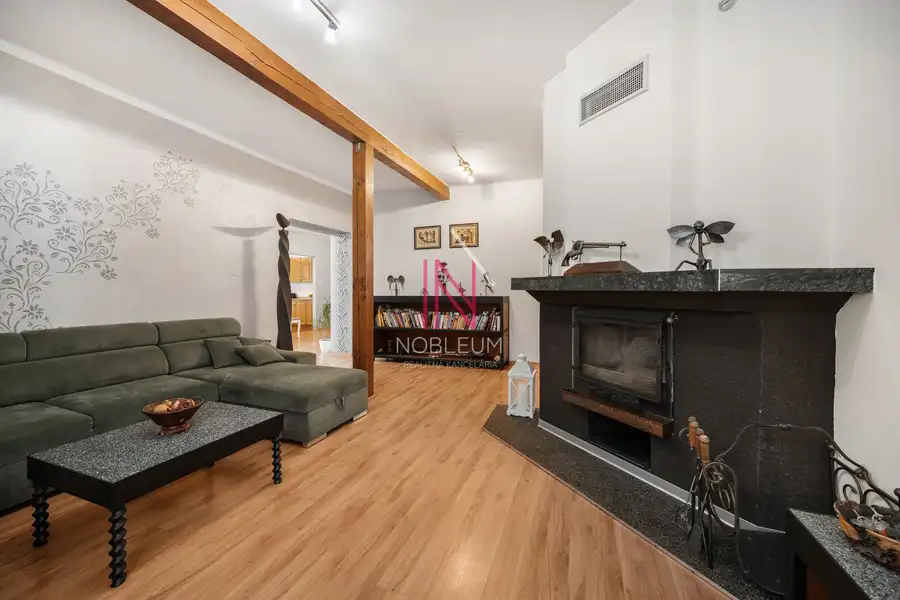
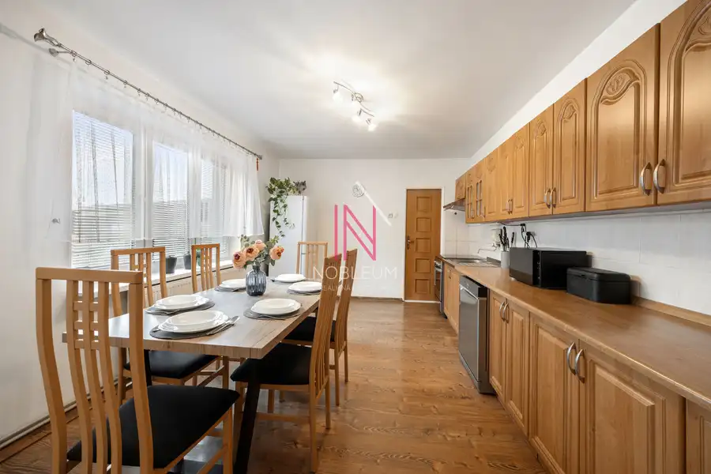
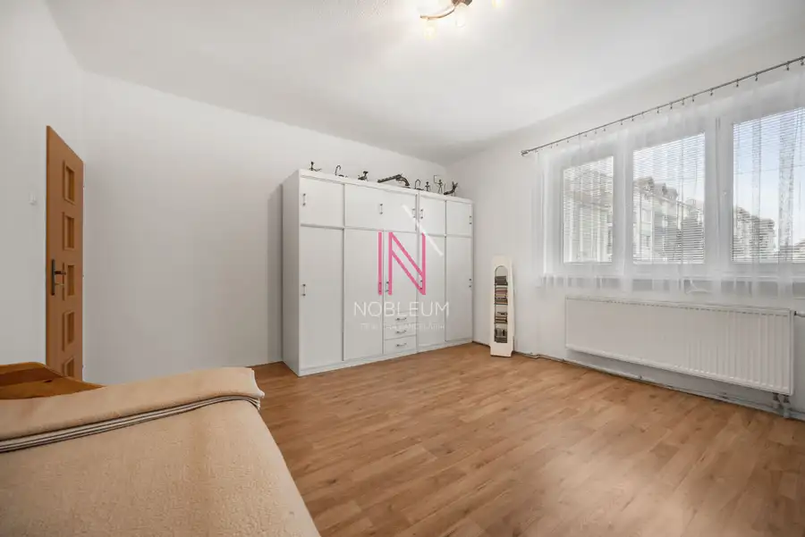
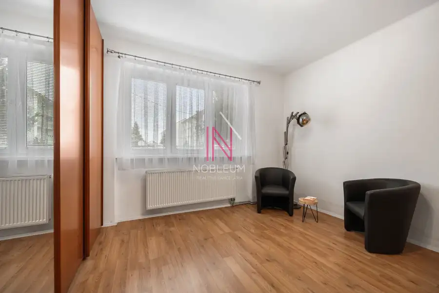

6-izbový rodinný dom s krbom, 2 kúpeľňami, garážou a altánkom – Chorvátsky Grob
Chorvátsky Grob









- Plocha200 m²
- StavKompletná rekonštrukcia
- VlastníctvoOsobné
O nehnuteľnosti
Ponúkame vám miesto, kde sa spája poctivá stavba s moderným životným štýlom. Domov, kde budete mať dostatok priestoru pre celú rodinu, krásnu záhradu na relax a zároveň istotu kvalitnej rekonštrukcie.Len v NOBLEUM nájdete na predaj tento priestranný rodinný dom, ktorý v sebe spája to najlepšie z dvoch svetov – pevné základy z roku cca 1965 s komfortom a funkčnosťou moderného bývania vďaka postupnej a rozsiahlej rekonštrukcii od roku 2008.Úžitková plocha domu: 200 m²Pozemok: 750 m² s orientáciou na juh ☀️Počet izieb: 6 iziebPočet kúpeľní: 2 kúpeľneDom je postavený z kvalitnej tehly, ktorá zaručuje nielen pevnosť a dlhú životnosť, ale aj príjemnú klímu v lete a výbornú tepelnú izoláciu v zime. K nízkym nákladom na vykurovanie prispievajú aj moderné plastové okná, ktoré zároveň poskytujú skvelú zvukovú izoláciu od vonkajšieho prostredia. O teplo domova sa stará ústredné kúrenie s radiátormi, no tú pravú útulnú atmosféru počas chladných večerov vytvorí nový krb na drevo (realizovaný cca pred 15 rokmi). Kuchyňa je vybavená modernou sklokeramickou varnou doskou a dom je plne napojený na plyn. Čo sa týka inžinierskych sietí, dom ponúka to najlepšie z oboch svetov: spoľahlivé napojenie na mestský vodovod a kanalizáciu, a zároveň vlastnú studňu, ktorá je ideálna na zavlažovanie záhrady a šetrí vaše náklady. Samozrejmosťou je aj pripojenie na optický internet. Plynové rozvody – prešli úplnou rekonštrukciou, čo zaručuje bezpečnosť a spoľahlivosť. Elektrika bola čiastočne zrekonštruovaná podľa potrieb moderného bývania.Užite si všetky výhody, ktoré tento dom ponúka. Vďaka čiastočnému podpivničeniu a pochôdznej povale budete mať vždy dostatok miesta na uskladnenie. Pohodlné parkovanie je zabezpečené vďaka garáži a ďalším dvom parkovacím miestam pod prístreškom, takže budete mať vždy dostatok miesta pre vaše vozidlá aj pre návštevy.VARIABILNÁ DISPOZÍCIA – VHODNÉ AJ AKO DVOJGENERAČNÉ BÝVANIETento dom ponúka unikátnu flexibilitu. Vďaka svojej veľkorysej dispozícii, dvom kúpeľniam a možnosti oddelenia priestorov je ideálny aj ako dvojgeneračné bývanie.Prízemie: Môže slúžiť ako samostatná bytová jednotka pre starých rodičov alebo naopak pre mladú rodinu. Poschodie: Poskytuje dostatok súkromia a priestoru pre ďalšiu časť rodiny. Každá generácia tak môže mať svoje súkromie, no zároveň ste si nablízku.Dispozícia tohto domu je navrhnutá tak, aby poskytla maximálny komfort a priestor pre celú rodinu. Srdcom domu je prízemie, kde nájdete priestrannú obývaciu izbu, kuchyňu s praktickou špajzou a dve ďalšie izby, ktoré môžu slúžiť ako spálne alebo pracovňa. Samozrejmosťou je kúpeľňa s WC a sprchovým kútom. Na poschodí vás čaká dokonalá zóna pre oddych – ďalšia obývacia izba s vlastnou kuchynskou linkou, spálňa, detská izba a druhá kompletná kúpeľňa. Každý člen rodiny si tu nájde svoje súkromie a vlastný kútik.Záhrada tohto domu má naozajstnú dušu. Hneď pri vstupe vás očarí chodník vydláždený tehličkami, ktorý evokuje pocit vidieckeho kúzla. Jeho cesta končí pri nádhernom altánku, ktorý svojím štýlom pripomína slnečné Toskánsko a pozýva na nerušený oddych.Predstavte si víkendy plné prechádzok v prírode, ranný beh v tichom prostredí alebo večery strávené v záhrade ďaleko od hluku mesta. Presne takýto životný štýl vám ponúka Chorvátsky Grob. Táto lokalita je synonymom pokoja, zelene a kvalitného bývania. Nájdete tu priestor na relax, športové aktivity a čas pre seba a svoju rodinu, pričom výhody hlavného mesta máte stále na dosah. obchodov, reštaurácií, lekární a služieb. Vďaka rýchlemu napojeniu na hlavné dopravné ťahy sa ľahko dostanete do Bratislavy aj do okolitých miest.V cene 445.000 EUR je zahrnutá provízia realitnej kancelárie, kompletný právny servis aj odborné hypotekárne poradenstvo. Dohoda na cene možná!Zaujal vás tento dom? Neváhajte ma kontaktovať!Rada vám odpoviem na všetky otázky, dohodnem si s vami obhliadku a prevediem vás celým procesom kúpy – od začiatku až po odovzdanie kľúčov. Ing. Jana Mikolášková, 0908 111 760, mikolaskova@nobleum.sk
Parametre
- Druh
- Rodinný dom
- Druh domu
- Klasický dom
- Dátum zverejnenia
- 19. 03. 2026
- Energetický certifikát budovy
- nie je
- Orientácia
- Južná
- Plocha pozemku
- 750 m²
- Počet nadzemných podlaží
- 2
- Rok výstavby
- 1965
- Stav nehnuteľnosti
- Kompletná rekonštrukcia
- Telekomunikácie
- Optická sieť
- Terén pozemku
- Rovinatý
- Typ
- Predaj
- Typ konštrukcie
- Tehlová
- Vlastníctvo
- Osobné
- Vykurovanie
- Ústredné, Krb
- Zariadenie
- Zariadené kompletne
- Zastavaná plocha
- 381 m²
- Úžitková plocha
- 200 m²